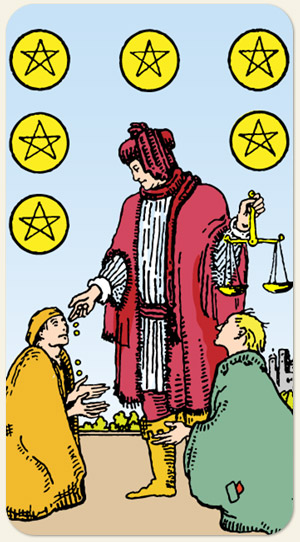

Reparação mais germinação, repensar onde cometemos erros, rever lacunas. Receber os recursos que precisa ou que merece, mostrar seus talentos. A diferença entre a generosidade e a exploração.
Possui um contraste com o Três de Ouros: em vez de criar uma relação onde um possui todos os recursos e os outros são colocados numa situação de submissão, criar um ambiente onde todos participam de forma ativa. Distribuição de dividendos, de lucros, restituição de impostos, esperar chegar sua vez (Julgamento).
Positivo: Pedir e receber, ser recompensado por falar a verdade, ter créditos para pedir algo, ter o suficiente para si e para ajudar ao outro, partilha de bens, correções monetárias, provisão divina, receber ajuda no momento em que mais precisa.
Negativo: Empréstimos com juros abusivos, pedido de ajuda negada, o buraco sem reparo, pedir por hábito, querer algo e não ter merecimento, desperdício, ajudar o outro sem critério, dar recursos para receber valorização afetiva, querer comprar o outro, usar os recursos como fonte de afeto.
Símbolos: Balança, Pedintes, Castelo ao Fundo, Árvores.
Cores: Vermelho, Amarelo, Azul, Verde, Cinza.